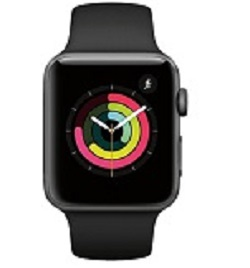

¿Qué es un iWatch?

El Apple Watch es un reloj inteligente de Apple que te permite monitorear los resultados de tus
actividades diarias e informarte sobre tu salud. Este primer smartwatch creado por la compañía de la
manzana mordida funciona para mandar mensajes de texto y hacer llamadas de manera rápida y
sencilla.
Como el Apple Watch está en tu muñeca, puede hacer cosas que otros dispositivos no pueden hacer. Se
convierte en un compañero de entrenamiento que registra todos tus movimientos, te informa sobre tu salud
y te mantiene conectado con las personas y las cosas que más te importan.
¿Cuál es la ventaja de tener un Apple Watch?

Recibe ayuda cuando la necesites.
El Apple Watch puede detectar si sufriste una caída fuerte y contactar a los servicios de emergencia en
caso de que no puedas moverte. También puedes recibir asistencia inmediata ante una emergencia, incluso
en el extranjero, con sólo mantener presionado el botón lateral.
La evolución del Apple Watch

Una vez se han tenido en cuenta estos conceptos básicos sobre los Apple Watch o relojes inteligentes de Apple, se puede pasar a hablar de cada uno de los modelos que se han presentado. Desde el año 2014, cada año Apple ha presentado una nueva generación de este dispositivo inteligente que pasamos a analizar.
- Apple Watch (primera generación) 2014
- Apple Watch Series 2 (2016)
- Apple Watch Series 3 (2017)
- Apple Watch Series 4 (2018)
- Apple Watch Series 5 (2019)
- Apple Watch Series 6 (2020)
- Apple Watch Series 7 (2021)
- Apple Watch Series SE (2021)